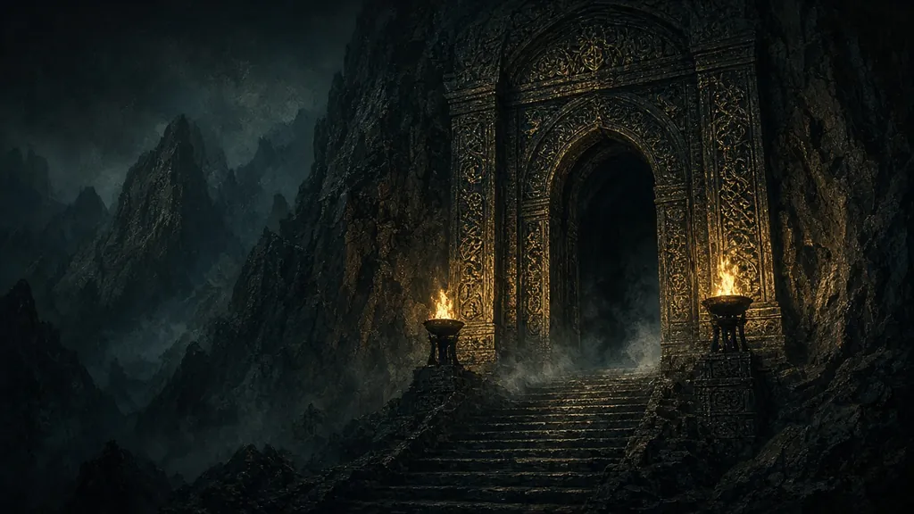

Category
Dungeons and raids
The nine launch dungeons and the three raids planned for December 9, 2026.
Articles

Thumbnails: ambiance illustrations — not a source.
Short entries

Thumbnails: ambiance illustrations — not a source.